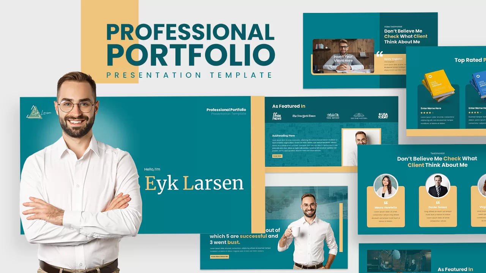

I want it to be an expansion of my current business that is professional and neatly designed.
It will make more business as a whole
and create more opportunity.
I want it to be a fun, relaxed webite to so my travels in all aspects. It shoule be calm
and relaxed in every way.
Lots of colors and freedom is what I have in mind for this one.
I need this one to be a very serious and professional website. A place to show myself off and create a solid layout. Would be a great way to put myself out there for the world to see. This would be the best for my current situation.
 Learn more about why I chose these ideas